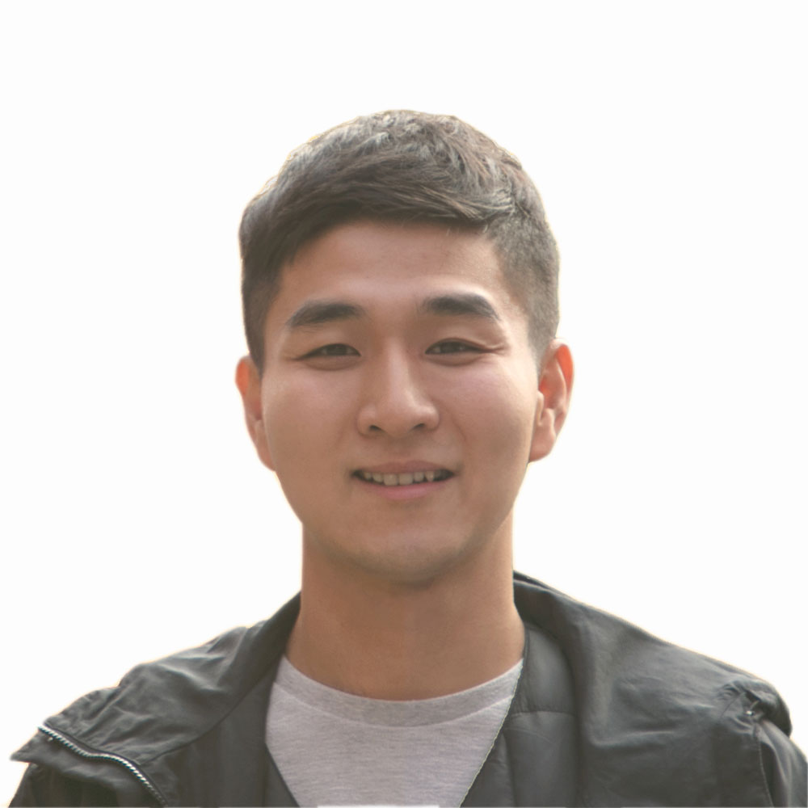

| 성 명 | 서 정 환 | 생년월일 | 1987. 06. 19 |
|---|---|---|---|
| 주 소 | 경기도 화성시 만세구 행정서로 48, 305동 902호 | ||
| 연 락 처 | 010-5378-9340 | 이 메 일 | sonicegoal@gmail.com |
| 포트폴리오 | jonneyseo.github.io/kr | ||

| 기간 | 학교명 | 전공 | 학위 | 학점 |
|---|---|---|---|---|
| 2019.09 – 2021.03 | British Columbia Institute of Technology | New Media Design & Web Development | Diploma | 89/100 |
| 2006.03 – 2013.02 | 아주대학교 | e-비즈니스학 / 경영학 복수전공 | 학사 | 3.77/4.5 |
| 근무기간 | 회사명 | 직위 / 직책 |
|---|---|---|
| 2022.05 – 2026.01 | PayShepherd 캘거리, 캐나다 (원격 근무) |
Software Engineer II |
| 북미 산업 현장의 원·하청 간 인보이싱 프로세스를 디지털화하는 B2B SaaS 스타트업의 개발자로서 프론트엔드로 시작해서 풀스택으로 성장하며, 기능 개발, 시스템 최적화, 아키텍처 현대화까지 제품 전 주기(Build → Stabilize → Scale)를 경험. UX Flow 설계, 백오피스 기획 및 구현에도 참여. LEMs Aggregation 모듈 런칭 30일 내 기존 트래픽 50% 달성, 3PIA AI 인보이스 분석 서비스 기획·론칭으로 3개월 내 $80K+ 임팩트 실현. AWS QuickSight 기반 BI 체계 구축. | ||
| 2021.01 – 2022.05 | SplitMango Inc. 노스 밴쿠버, 캐나다 |
Web Service Planner & Developer · UI/UX Designer |
| 웹 에이전시 소속 기획·개발·디자이너로서 클라이언트 요구사항 분석 → IA 설계 → UX Flow 기획 → Shopify·WordPress·Statamic 구현까지 서비스 기획 전 과정 단독 수행. 신규 프로젝트 10개 이상, 클라이언트 계정 30개 이상 운영 (커머스·레스토랑·건축·비영리 다업종). | ||
| 2013.01 – 2019.05 | LG전자 · TV 해외영업마케팅 서울, 대한민국 |
선임 |
| 글로벌 52개 법인·150여 개국 대상 TV In-store 디스플레이 전략·운영 총괄. OLED TV 및 AI TV 등 프리미엄 제품군의 매장 내 사용자 경험 서비스 기획 (시나리오 20개) — 15개국 약 3,000개 매장 동시 운영, 중동·아프리카 위주 13개국 이상 현지 교육 및 전파. | ||
| 기술스택 | JavaScript ES6 · PHP · MySQL · REST API · Adobe Creative Suite · Figma · Sketch · Shopify · WordPress · Statamic |
|---|---|
| 클라우드 · 협업 | AWS (EC2 · S3 · QuickSight · Lambda · Textract 등), Jira, Confluence, Docker, Github |
| 어학 | 영어 — Full professional proficiency (캐나다 7년 거주) |
저는 글로벌 기업의 마케터로 시작해 디자이너와 엔지니어로서의 역량을 직접 쌓아온 서비스 기획자입니다. 비즈니스 요구사항을 정의하는 마케터의 안목, 사용자 Flow와 경험을 설계하는 디자이너의 감각, 기술 제약 안에서 실현 가능하게 구현하는 엔지니어의 깊이 — 세 가지 관점을 함께 갖추고 있어 기획과 실행 사이의 간극을 좁혀왔습니다.
LG전자에서 전세계로 배포되는 마케팅 Assets을 총괄 기획·운영한 경험과, 캐나다 웹 에이전시 및 스타트업에서 다양한 커머스 웹 솔루션 및 B2B SaaS 기획 및 개발 전 주기를 담당한 경험을 바탕으로, 현대자동차의 웹·커머스 서비스 기획에 기여하고자 지원합니다.